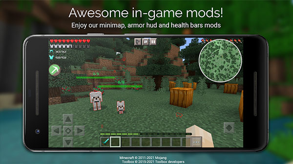
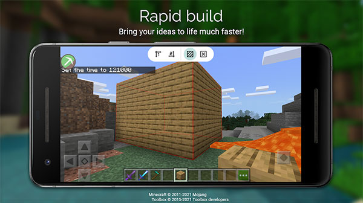
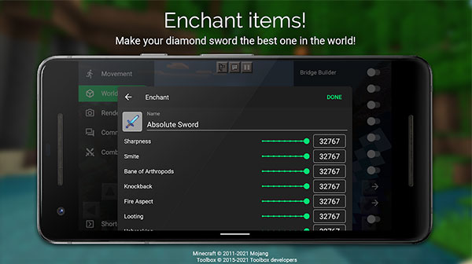

Toolbox 手机版完全不上手指南——第一次接触就能把面板打开的那种
还在因为找不到 M 按钮、不知道面板怎么开而挠头？这篇文章从安装到第一次跑通，把 Toolbox 新手最懵的几件事一次讲透。
如果你是第一次听说 Toolbox，又刚好在手机上玩 Minecraft 基岩版，那这篇就是给你写的——不需要任何基础，跟着做五分钟，你就能把它打开、跑起来、用上第一个功能。别担心术语，我会把所有新东西第一次出现时就用括号解释清楚。
它到底是干嘛的：一句话讲明白
去它的官网转转你就懂了——把 Toolbox 想成一个给 Minecraft 基岩版用的「超级遥控器」就对了。你平时玩游戏，天要自己等黑、矿要自己挖、想回出生点只能走回去或者死一次重来。Toolbox 在游戏画面里多了一个面板，点一下就能直接调时间、切维度、开飞行、给东西……所有原版需要花很多步骤的事，在这里都变成了一两次点击。
它不是独立游戏，也不是必须装的 MOD。你手机上得先有 Minecraft 基岩版本体（这个叫「宿主程序」），Toolbox 才知道往哪块地盘上搭它的面板。这是很多新手栽第一个跟头的地方——先装 Minecraft，再装 Toolbox，顺序不能反。

五分钟上手：从安装到第一次跑通
我按最短路径给你走一遍，每一步我会说你会看到什么。照着做完，你就能确定 Toolbox 在你手机上是正常工作的。
第一步：准备 Minecraft 基岩版
打开你手机上的应用商店，搜索 Minecraft，装的是官方那一款（基岩版，也叫 PE 版或手机版）。装完不用打开，放着就行。
第二步：下载 Toolbox 并安装
去官方下载把 Toolbox 装到手机上。装好以后桌面上会多一个 Toolbox 的图标。
第三步：从 Toolbox 启动游戏（这步最关键）
别直接点 Minecraft 图标！一定要点 Toolbox 图标进去。这是整个新手教程里最容易被忽略的一点，也是很多人找不到面板的根本原因。Toolbox 打开后会有一个启动按钮，点它，它会自动把 Minecraft 拉起来，同时把面板代码「注入」（就是偷偷塞进去的意思）到游戏运行的过程里。
第四步：进入世界，找到 M 按钮
Minecraft 正常加载，进一个世界（随便进一个创造档或者你自己的生存档都行）。世界加载完的瞬间，你会发现屏幕上多了一个小小的 M 字母按钮——这就是 Toolbox 的入口。
如果没看到 M 按钮：先确认是不是从 Toolbox 启动的游戏；再等个两三秒，有时候加载慢一点。
第五步：点开面板，试第一个功能
点那个 M 按钮，面板展开。面板里的功能按类别分好了，比如「世界」「生存辅助」「传送」之类。找到「世界」那个分区，里面应该有时间控制——白天、正午、夜晚几个按钮。点一下「夜晚」，你会看到太阳迅速落下去，天变黑，可能还会开始刷怪。恭喜你，Toolbox 跑通了。
上手后先玩这三个功能
面板里的功能挺多，但我建议你先碰这三个。它们最直观、零风险，而且玩过之后你对 Toolbox 的理解会一下深很多。
1. 改时间：再也不用等天黑或等天亮
就像上面演示的那个。但你可能没注意到，时间控制不只是那几个档位。面板里有的版本还支持「停走时间」——就是让当前时刻凝固住，天不会再亮也不会再黑。盖房子的时候开这个，你可以专心砌墙，不用担心突然天黑刷出苦力怕来拆你的半成品。
还有个实用搭配：时间改到夜晚 + 开「全亮模式」。夜晚刷怪效率高，但黑得看不见东西；全亮模式让夜晚也像白天一样清晰，刷怪时视野好到离谱。
2. 维度直达：不用搭传送门直接去下界
原版去下界要凑十个黑曜石、搭个 4×5 的门框、用打火石点着才能进，前期没装备的话这流程挺费劲。Toolbox 的传送面板里有个维度直达选项，点一下就把你扔下界去了，再点一下回来。
常用场景：采点石英、搞点地狱疣、挖灵魂沙——下去点两下采完就走，不用搭门也不用担心传送门被破坏。
但有个事得提醒你：下界地形最常见的就是岩浆湖，你直接传送下去，落点安全完全没保障。如果发现自己正在往下掉且底下是红的，立刻开飞行或者赶紧回血。稳妥的做法是先在创造模式里去一次，记住降落点，以后就在同一个地方来回。更多关于维度跳转的参数和注意事项，去Toolbox文档里翻就清楚了。
3. 飞行：想怎么飘就怎么飘
生存辅助类里有飞行开关。开了之后双击跳跃键起飞，方向杆控制方向，想停就再跳一下落地。这个对新手太友好了——原版生存没有鞘翅的话想飞几乎不可能，有了这个，跑图、找村庄、快速回家全是几分钟的事。

小白的三个常见疑问
这些问题我翻了 FAQ 和社区讨论，出现频率最高的三个，直接给你答案。
Q：Toolbox 是免费的吗？基本功能免费，打开时会有广告，部分高级功能需要 Premium 会员。社区还记录了一种机制——看广告换一段高级功能的使用时长，不想花钱的话这个路子可以试试。
Q：游戏更新后 Toolbox 用不了怎么办？ Toolbox 的面板是跟游戏版本绑定的。Minecraft 一更新，面板就得跟着适配，如果还没适配完，你就会遇到面板打不开或者功能失效的情况。三条路：等 Toolbox 发新版本、临时把游戏退回到上一个版本、或者去社区看看有没有好心人贴了适配中的版本。
Q：服务器上能用吗？能用，但风险自担。大多数正经服务器都开了反作弊检测，面板功能一调用就可能被识别出来然后把你踢出去甚至封号。和朋友自己开的小型私人服另说，熟人之间玩一般没人管。
进阶方向的话，推荐你翻翻附魔和物品那一块——直接给装备附魔、搜索物品栏里的东西、一键清空背包，这些配合生存模式用起来效率能翻好几倍。
好，到这里你应该已经把面板打开、玩过三个功能了。最后说一句鼓励的——Toolbox 本质上就是个帮你省时间的工具，没什么门槛，怕玩坏的话就先在创造档里随便造。
另外这套整理好的中文资料我同步放在了 GitHub、Gitee 和 GitCode 三个仓库里，国内网络访问选 Gitee 会快一些，GitCode 作为额外备份以防万一。
